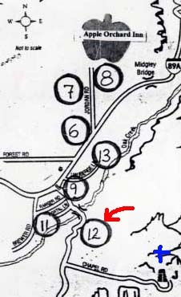
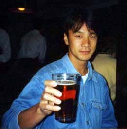
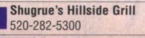

セドナ日記 〜 第１日目 98.5.4
サーモンとカラマリのおいしいディナー
 セドナはアメリカにある。その土地が、そんなに古くない時代まで、ホピ族やナバホ族の、居住地であったとしても、現在の状態はアメリカ（U.S.A）の一部である。 その政治的、本質的は議論はちょっと横に置いておく。 ここで重要なのはこの地がアメリカだということであり、すなわち食事もアメリカンなのかもしれない、ということである。 あの、「大味」、「質より量」的な、食事。それも、それも旅行のうちだから、楽しめばいいんだけど、時々、米系の航空会社の機内食なみの食事が、そこそこのレストランで出たりすることもあり、がっかりしてしまうことも、アメリカではよく経験する。別にいいんだけど、できれば、おいしいほうがいいでしょう。
さて、セドナで最初の食事である。B＆Bのポーラからもらった、レストランマップを頼りに決めて見る。 これまでの経験からすると、イタリアンというのは比較的、アメリカのなかでも大丈夫な味という経験則があったので、イタリアンにしようかと思ったが、日も暮れてきた（夕日を見にいった後なので当然だが....）ので、できるだけ、夕日を見た教会から近いところにした。 そうやって、入ったのが、「Shugrue's Hillside Grill」であった。 教会からいくと、「Y」にちょっと前で川を渡るのだが、そのさらにちょっと手前、右側にきれいなショッピングセンターがある。その上のほうに、そのレストランはあった。
 ドアをあけた瞬間、「しまった」と思った。ちゃんとしているレストランなのだ。これはきっと高い。すごく高いぞ。 ちょっと、とまどったが、すぐに席に案内されてしまった。「まあ、ちょっとくらい高くてもいいか。初日だし...。」 そして、案内された席は窓際で、きれいな月がよく見える席だった。後は、味が並み以下でないことを願おう。 まずは、お飲み物。ビールを注文する。地ビールがあるということで、すかさずそれを注文。食事のほうは、おそるおそる「フライドカラマリ」と「焼きサーモン」にきめた。量も味もわからないので、とりあえずそれだけにしておいた。
ビールが来る。僕は、量は飲めないんだけど、やっぱり一口目は大好きである。地ビールだ。おいしい。 そして、料理、カラマリにサーモン。量がすごい。４人分くらいはありそう。ちょっと味が心配になるが、なんと食べて見ると、すごくおいしい。東京でも、本当においしいと思えるところって少ないと思うが、ここの料理は本当においしかった。 いろいろ、心配したけど「Everything OK!」だったのだ。僕も千穂も満足であった。どんな味だったか、レポートするべきなんだけど、すごくおいしかったとしか書けません。表現力のなさをお許しください。 最初のオーダーだけで満腹になり至福の時が過ごせたのだった。
 きれいな月とおいしい食事。セドナらしい夕食だった。料金も40ドル位だった。お店の雰囲気からすれば、これは安いかもしれない。 ほろ酔い気分で、B＆Bにかえる。 第一日目、セドナについたのが、午後３時過ぎ。半日しか滞在していないが、まったくいいことずくめのスタートだった。